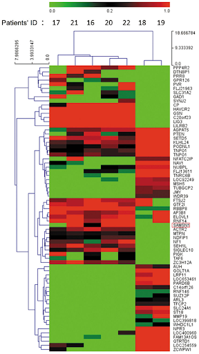

26 Clustering (Summer 2025)
Last time, we began our journey into unsupervised learning by discussing Principal Component Analysis (PCA).
In this lecture, we will explore another very popular unsupervised learning concept: clustering. Clustering allows us to “group” similar datapoints together without being given labels of what “class” or where each point explicitly comes from. We will discuss two clustering algorithms: K-Means clustering and hierarchical agglomerative clustering, and we’ll examine the assumptions, strengths, and drawbacks of each one.
26.1 Review: Taxonomy of Machine Learning
26.1.1 Supervised Learning
In supervised learning, our goal is to create a function that maps inputs to outputs. Each model is learned from example input/output pairs (training set), validated using input/output pairs, and eventually tested on more input/output pairs. Each pair consists of:
- Input vector (features)
- Output value (label)
In regression, our output value is quantitative, and in classification, our output value is categorical.
26.1.2 Unsupervised Learning
In unsupervised learning, our goal is to identify patterns in unlabeled data. In this type of learning, we do not have input/output pairs. Sometimes, we may have labels but choose to ignore them (e.g. PCA on labeled data). Instead, we are more interested in the inherent structure of the data we have rather than trying to simply predict a label using that structure of data. For example, if we are interested in dimensionality reduction, we can use PCA to reduce our data to a lower dimension.
Now, let’s consider a new problem: clustering.
26.1.3 Clustering Examples
26.1.3.1 Example 1 - Image Compression with Clustering
Clustering can be used for image compression. Why? Digital images consume significant storage and bandwidth, so reducing the number of colors simplifies images while retaining their visual appeal.
- Clustering can group similar colors (pixels) in an image into clusters.
- Each cluster represents a color centroid (mean color of the group).
- Replace each pixel in the image with the color of its cluster centroid, reducing the number of unique colors.
In the example below, notice that using more clusters will make the compressed image look more similar to the original image, while using fewer clusters will look more like a silhouette of the image. Finding a good balance can help resemble the original image while storing less information.

Image compression can also be done using other techniques including transform-based, prediction-based, and deep learning-based methods.
26.1.3.3 Example 3 - Clustering in Climate Sciences
Clustering in climate science helps to identify patterns in large, complex datasets and provide insights into global and regional climate trends. Some examples include :
- Climate zone identification
- Weather pattern analysis
- Environmental monitoring
In this example, we grouped regions based on average temperatures to understand climate zones.
26.2 Taxonomy of Clustering Approaches
There are many types of clustering algorithms, and they all have strengths, inherent weaknesses, and different use cases. There are two main groups of clustering algorithms we will focus on: Agglomerative approaches to clustering, and Partitional approaches to clustering.
We will first focus on a partitional approach: K-Means clustering.
26.3 K-Means Clustering
The most popular clustering approach is K-Means. The algorithm itself entails the following:
Pick an arbitrary \(k\), and randomly place \(k\) “centers”, each a different color.
Repeat until convergence:
- Color points according to the closest center (also called centroids).
- Move the center for each color to the center of points with that color.
Consider the following data with an arbitrary \(k = 2\) and randomly placed “centers” denoted by the different colors (blue, orange):

Now, we will follow the rest of the algorithm. First, let us color each point according to the closest center:
Next, we will move the center for each color to the center of points with that color. Notice how the centers are generally well-centered amongst the data that shares its color.
Assume this process (re-color and re-set centers) repeats for a few more iterations. We eventually reach this state.
After this iteration, the center stays still and does not move at all. Thus, we have converged, and the clustering is complete!
26.4 Minimizing Inertia
Consider the following example where \(K = 4\):

Due to the randomness of where the \(K\) centers initialize/start, you will get a different output/clustering every time you run K-Means. Consider three possible K-Means outputs; the algorithm has converged, and the colors denote the final cluster they are clustered as.

Which clustering output is the best? To evaluate different clustering results, we need a loss function.
The two common loss functions are:
- Inertia: Sum of squared distances from each data point to its center.
- Distortion: Weighted sum of squared distances from each data point to its center.
In the example above:
- Calculated inertia: \(0.47^2 + 0.19^2 + 0.34^2 + 0.25^2 + 0.58^2 + 0.36^2 + 0.44^2\)
- Calculated distortion: \(\frac{0.47^2 + 0.19^2 + 0.34^2}{3} + \frac{0.25^2 + 0.58^2 + 0.36^2 + 0.44^2}{4}\)
Switching back to the four-cluster example at the beginning of this section, random.seed(25) had an inertia of 44.88, random.seed(29) had an inertia of 45.87, and random.seed(40) had an inertia of 54.27. It seems that the best clustering output was random.seed(25) with an inertia of 44.88!
26.4.1 Overfitting in K-Means
Another important note. As an exercise, consider, what is the inertia of K-Means when k = the # of data points?
Zero! In this case, each of the k centers would be placed exactly on top of one of the data points. Then, we would reach convergence on the first iteration.
Notice then that choosing k = n will always minimize inertia, but a clustering where each point is its own cluster is not very useful. This is the unsupervised analog of fitting a very high degree polynomial to our data in OLS. We are overfitting! Later on in this lecture note we will discuss how to choose K to avoid this problem. For now, we will focus on a more constrained problem: For a fixed value of K, how can we find globally optimal clusters?
26.4.2 Hardness of K-Means
It turns out that the function K-Means is trying to minimize is inertia, but often fails to find global optimum. Why does this happen? We can think of K-means as a pair of optimizers that take turns. The first optimizer holds center positions constant and optimizes data colors. The second optimizer holds data colors constant and optimizes center positions. Neither optimizer gets full control!
This is a hard problem: give an algorithm that optimizes inertia FOR A GIVEN \(K\); \(K\) is picked in advance. Your algorithm should return the EXACT best centers and colors, but you don’t need to worry about runtime.
Note: This is a bit of a CS61B/CS70/CS170 problem, so do not worry about completely understanding the tricky predicament we are in too much!
First note that there are \(k^n\) possible colorings because there are \(k\) colors that each point could be, so with \(n\) points, this gives \(k^n\) possibilities.
A potential algorithm:
- For all possible \(k^n\) colorings:
- Compute the \(k\) centers for that coloring.
- Compute the inertia for the \(k\) centers.
- If current inertia is better than best known, write down the current centers and coloring and call that the new best known.
No better algorithm has been found for solving the problem of minimizing inertia exactly.
Consider the following results of two K-Means clustering outputs:
Which clustering result do you like better? K-Means likes the one on the right better because it has lower inertia (the sum of squared distances from each data point to its center), but this raises some questions:
- Why is the inertia on the right lower? K-Means optimizes for distance, not “blobbiness”.
- Is clustering on the right “wrong”? Good question!
26.5 Hierarchical Agglomerative Clustering
Now, let us consider hierarchical agglomerative clustering.

Now, let us introduce Hierarchical Agglomerative Clustering! We start with every data point in a separate cluster, and we’ll keep merging the most similar pairs of data points/clusters until we have one big cluster left. This is called a bottom-up or agglomerative method.
There are various ways to decide the order of combining clusters called Linkage Criterion:
- Single linkage (similarity of the most similar): the distance between two clusters as the minimum distance between a point in the first cluster and a point in the second.
- Average linkage: the distance between two clusters as the average of all pairwise distances between points in the first cluster and points in the second.
- Complete linkage (similarity of the least similar): the distance between two clusters as the maximum distance between a point in the first cluster and a point in the second.
The linkage criterion decides how we measure the “distance” between two clusters. Regardless of the criterion we choose, the aim is to combine the two clusters that have the minimum “distance” between them, with the distance computed as per that criterion. In the case of complete linkage, for example, that means picking the two clusters that minimize the maximum distance between a point in the first cluster and a point in the second.
When the algorithm starts, every data point is in its own cluster. In the plot below, there are 12 data points, so the algorithm starts with 12 clusters. As the clustering begins, it assesses which clusters are the closest together.

The closest clusters are 10 and 11, so they are merged together.
Next, points 0 and 4 are merged together because they are closest.
At this point, we have 10 clusters: 8 with a single point (clusters 1, 2, 3, 4, 5, 6, 7, 8, and 9) and 2 with 2 points (clusters 0 and 10). The next two closest points are 1 and 5, so we merge them.
Although clusters 0 and 3 are not the closest, let us consider if we were trying to merge them. A tricky question arises: what is the “distance” between clusters 0 and 3? We can use the Complete-Link approach that uses the max distance among all pairs of points between groups to decide which group has smaller “distance”. In this case, the distance between clusters 0 and 3 would be the distance from the bottom 0 point to the 3 point.
Let us assume the algorithm runs a little longer, and we have reached the following state. Clusters 0 and 7 are up next, but why? The max line between any member of 0 and 6 is longer than the max line between any member of 0 and 7.
Thus, 0 and 7 are merged into 0 as they are closer under the complete linkage criterion.
After more iterations, we finally converge to the plot on the left. There are two clusters (0, 1), and the agglomerative algorithm has converged.
Notice that on the full dataset, our agglomerative clustering algorithm achieves the more “correct” output.
26.5.1 Clustering, Dendrograms, and Intuition
Agglomerative clustering is one form of “hierarchical clustering.” It is interpretable because we can keep track of when two clusters got merged (each cluster is a tree), and we can visualize the merging hierarchy, resulting in a “dendrogram.” Won’t discuss this in detail for this course, but you might see these in the wild. Here are some examples:
26.6 Picking K
The algorithms we’ve discussed require us to pick a \(K\) before we start. But how do we pick \(K\)? Often, the best \(K\) is subjective. For example, consider the state plot below.
26.6.1 Elbow Method
How many clusters are there here? For K-Means, one approach to determine this is to plot inertia versus many different \(K\) values. We’d pick the \(K\) in the elbow, where we get diminishing returns afterward. Note that data often lacks an elbow, so this method is not foolproof. Here, we would likely select \(K = 2\) or \(K = 3\).
26.6.2 Using a Dendrogram to Pick K
For agglomerative clustering, one approach to pick K is to use a dendrogram.
The agglomerative clustering algorithm starts with the individual data points at the bottom. When two clusters are merged, they are bridged in the dendrogram. The y-axis reports the distance (according to our chosen linkage criterion) between points/clusters when they are merged.
In order to choose K, we can cut the dendrogram just before the first “big” gap between the horizontal lines. This gap indicates a significant jump in distance and suggests that merging clusters beyond this point combines dissimilar groups.
The number of cut vertical lines represents the optimal K.
In this example, the horizontal line crosses 4 vertical lines so the optimal K is 4 clusters ([9,41], [5,20], [17,12], [17,8,7,14]). However, this measure of how “big” the gap is is subjective, so depending on your data you might choose a different place to cut the line, and end up with a different optimal K.
26.6.3 Silhouette Scores
To evaluate how “well-clustered” a specific data point is, we can use the silhouette score, also termed the silhouette width. A high silhouette score indicates that a point is near the other points in its cluster and far from points not in its cluster; a low score means that it’s far from the other points in its cluster and near points in other clusters.

For a data point \(X\), score \(S\) is: \[S =\frac{B - A}{\max(A, B)}\] where \(A\) is the average distance to points in the same cluster, and \(B\) is the average distance to points in the closest cluster.
Consider what the highest possible value of \(S\) is and how that value can occur. The highest possible value of \(S\) is 1, which happens if every point in \(X\)’s cluster is right on top of \(X\); the average distance to other points in \(X\)’s cluster is \(0\), so \(A = 0\). Thus, \(S = \frac{B}{\max(0, B)} = \frac{B}{B} = 1\). Another case where \(S = 1\) could happen is if \(B\) is much greater than \(A\) (we denote this as \(B >> A\)).
Can \(S\) be negative? The answer is yes. If the average distance to X’s clustermates is larger than the distance to the closest cluster, then this is possible. For example, the “low score” point on the right of the image above has \(S = -0.13\).
If we have a large S, B is big and A is small. If a point has a big B, the nearest cluster to that point’s cluster is far away. If we have a small A, the cluster that point is in is very tight.
26.6.4 Evaluating Clusters
To evaluate different clustering results, we discussed two loss functions:
- Inertia: Sum of squared distances from each data point to its center.
- Lower inertia indicates tighter clusters.
- Inertia always decreases as k increases, so it doesn’t penalize overfitting.
- Inertia doesn’t consider whether clusters are well-separated or non-spherical.
- Use the elbow method to find optimal number of clusters.
- Silhouette Score: Silhouette score evaluates how well a point fits within its cluster versus how poorly it fits into neighboring clusters.
- A higher silhouette score indicates better-defined and separated clusters.
- Useful when comparing clustering results for different values of k.
- Negative silhouette scores can highlight misclassified points or overlapping clusters.
- Assumes convex clusters and computationally expensive.
We discussed using the elbow method to pick a k with inertia, but let’s also discuss another method for visualizing silhouette scores.
26.6.5 Silhouette Plot
We can plot the silhouette scores for all of our datapoints. The x-axis represents the silhouette coefficient value or silhouette score. The y-axis tells us which cluster label the points belong to, as well as the number of points within a particular cluster. Points with large silhouette widths are deeply embedded in their cluster; the red dotted line shows the average. Below, we plot the silhouette score for our plot with \(K=2\).
Similarly, we can plot the silhouette score for the same dataset but with \(K=3\):


The average silhouette score is lower with 3 clusters, so \(K=2\) is a better choice. This aligns with our visual intuition as well.
26.6.6 Picking K: Real World Metrics
Sometimes you can rely on real-world metrics to guide your choice of \(K\). Assume that you have a T-shirt production line and you want to decide about the different T-shirt sizes you need to produce. We can either:
- Cluster heights and weights of customers with \(K = 3\) to design Small, Medium, and Large shirts
- Cluster heights and weights of customers with \(K = 5\) to design XS, S, M, L, and XL shirts
To choose \(K\), consider projected costs and sales for the 2 different \(K\)s and select the one that maximizes profit.
26.7 Conclusion
We’ve now discussed a new machine learning goal — clustering — and explored two solutions:
- K-Means Clustering tries to optimize a loss function called inertia (no known algorithm to find the optimal answer in an efficient manner)
- Hierarchical Agglomerative Clustering builds clusters bottom-up by merging clusters “close” to each other, depending on the choice of linkage.
Our version of these algorithms required a hyperparameter \(K\). There are 4 ways to pick \(K\): intuitively, the elbow method, silhouette scores, or by harnessing real-world metrics.
There are many machine learning problems. Each can be addressed by many different solution techniques. Each has many metrics for evaluating success / loss. Many techniques can be used to solve different problem types. For example, linear models can be used for regression and classification.
We’ve only scratched the surface and haven’t discussed many important ideas, such as neural networks and deep learning. In the next lecture, we’ll provide some specific course recommendations on how to explore these topics further.